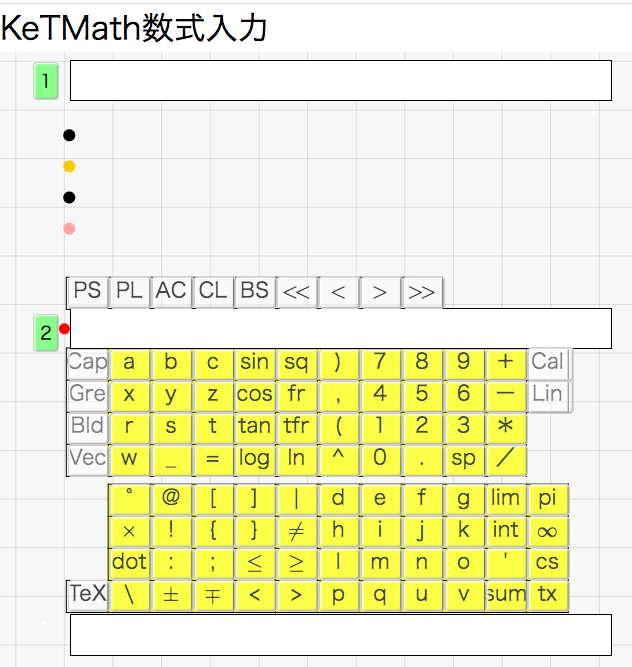

KeTMath
2023-09-10

-
KeTMath(max)は1次元数式を$\TeX$で表示するWebアプリです．
- 例えば，fr(1,2)sq(3)sin(4x) が簡易数式で，$\dfrac{1}{2}\sqrt{3}\sin 4x$と表示されます
- KeTMath数式は1行のテキストなので，メール等での送受に適しています
- しかし，数式の意味を捉えるには$\TeX$ の方が優れています
- 送り手はKeTMathで1次元数式を作成・確認してから送ります
- 受け手はKeTMathの入力欄にペーストして数式を確認します．
- 数式ルールについては，KeTMath数式を見てください
KeTMathアプリの後にも掲載されています
-
YouTubeにKeTMathの説明動画があります
- KeT-LMSはKeTMathによるオンライン授業支援システムです